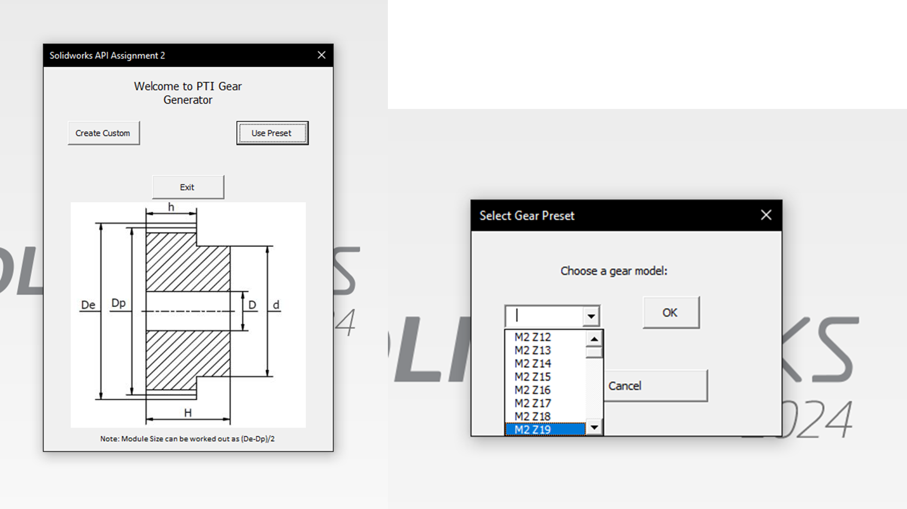
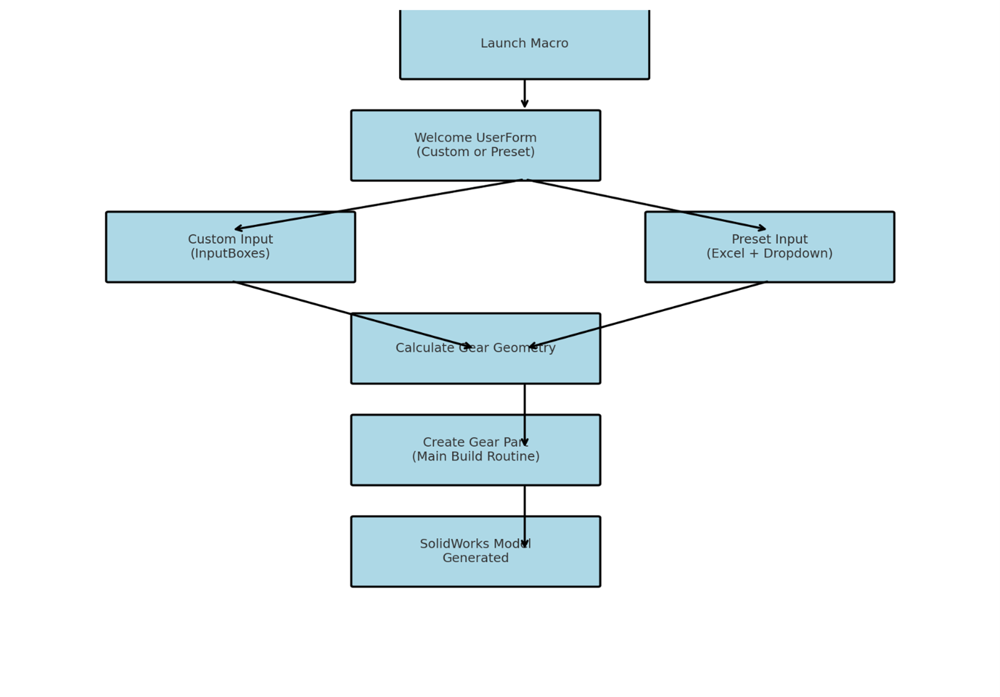
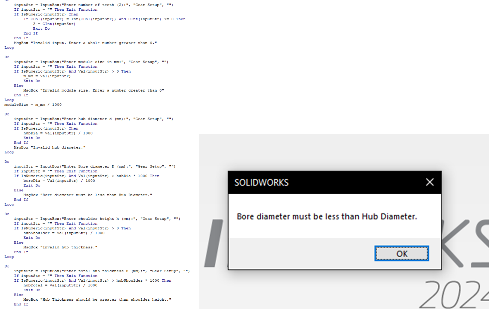
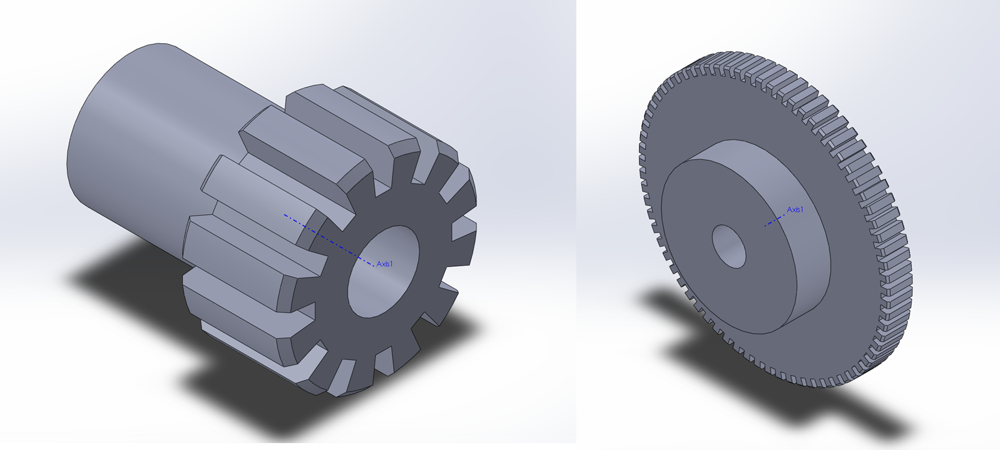

SolidWorks API Gear Generator
A parametric CAD automation tool developed in VBA using the SolidWorks API. The macro generates fully defined spur gear models from either custom user inputs or an Excel-based preset library, reducing repetitive manual modelling and improving consistency across gear designs.
Project Overview
Standard mechanical components such as gears are common in design workflows, but manually creating each variation can be slow and prone to error. This project automated the creation of spur gears in SolidWorks by allowing users to enter gear parameters or select predefined models from an Excel-based preset library.
Objective
The objective was to create a reliable macro that could generate consistent and manufacturable gear geometry while reducing manual CAD effort. The tool needed to be flexible enough for custom designs, efficient enough for repeated standard components, and robust enough to prevent invalid user inputs.

How the Tool Works
- The macro launches with a welcome UserForm where the user chooses between custom or preset gear creation.
- In custom mode, the user enters parameters such as number of teeth, module size, bore diameter, hub diameter, shoulder height, and total hub thickness.
- In preset mode, the user selects a gear model from a dropdown linked to an Excel-based library of predefined values.
- The same central build logic is used for both modes, keeping the workflow consistent and reusable.
- The macro creates a SolidWorks part and builds the gear through modular operations including base extrusion, tooth cuts, circular patterning, chamfers, hub creation, and bore hole creation.

Boundary Conditions and Validation
- Tooth count must be a positive integer between 3 and 100.
- Dimensional inputs must be greater than zero.
- Bore diameter must be smaller than hub diameter.
- Hub shoulder height must be smaller than total hub height.
- Invalid text, decimal tooth counts, negative values, missing presets, and cancelled selections trigger warning prompts instead of failed geometry.
Calculated Geometry
The macro calculates dependent dimensions such as pitch diameter, outer diameter, root radius, circular pitch, and tooth proportions from the user's inputs. The tooth cut width and depth scale dynamically with the circular pitch, helping the generated gears remain proportional across different sizes.

Program Structure
The program was structured as a modular, event-driven workflow. The welcome form sends the user to either the custom input route or the preset Excel route. Both routes populate the same global variables before the main build routine creates the part. Key procedures included:
- LaunchWelcomeForm — starts the user interface and route selection.
- GetUserInputs — collects and validates custom parameters.
- CalculateGearGeometry — derives pitch diameter, outer radius, circular pitch, and tooth proportions.
- CreateGearBase, CreateToothCut, and CreateCircularPattern — build the gear body and tooth pattern.
- AddChamfers, InsertAxis, AddHub, and AddBoreHole — add finishing and functional features.
Testing and Results
- Tested small, medium, and large gear configurations, including Z = 8, 24, and 75.
- Tested edge cases at Z = 3 and Z = 100 to confirm stable geometry near the imposed limits.
- Confirmed invalid inputs were rejected before geometry generation.
- Compared custom-generated gears against equivalent preset-generated gears for consistency.
- Generated final parts rebuilt successfully without rebuild warnings during testing.
Skills Demonstrated
- SolidWorks API programming using VBA.
- Parametric CAD modelling and automated feature creation.
- User interface design through UserForms and input prompts.
- Error handling, validation logic, and fail-safe workflows.
- Engineering workflow improvement through automation.

Reflection and Future Improvements
This project showed how programming can extend CAD software beyond manual modelling. By combining parametric design rules, user validation, modular code, and SolidWorks feature creation, the macro turned a repetitive modelling task into a faster and more reliable workflow. Future improvements could include support for additional gear types, refined involute tooth profiles, expanded Excel libraries, and a more advanced graphical interface.